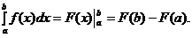
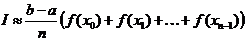
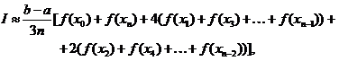
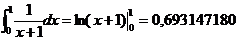
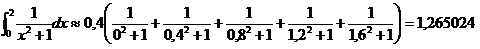
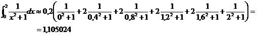

Kui lõigus [a;b] integreeruval funktsioonil f on olemas algfunktsioon F, siis Newton- Leibnizi valemi järgi:

Newton-Leibnizi valem kaotab oma praktilise väärtuse, kui algfunktsiooni ei saa üldse või küllalt lihtsalt avaldada elementaarfunktsioonide kaudu. Sel korral tekib vajadus määratud integraali ligikaudseks arvutamiseks. Määratud integraali ( I ) väärtuse ligikaudseks leidmiseks võib kasutada näiteks ristkülikvalemit või trapetsvalemit.

Märkus. Trapetsvalemi ja ristkülikvalemi peamiseks puuduseks on nende väike täpsus. Kui on vaja leida integraali väärtust suurema täpsusega, siis võib kasutada näiteks Simpsoni valemit.

Järgnevas tabelis on esitatud integraali  ligikaudsed väärtused, mis on leitud ristkülikvalemi, trapetsvalemi ja Simpsoni valemi abil sõltuvalt osalõikude arvust n. Arvutustulemuste täpsuse hindamiseks võib kasutada integraali täpset väärtust, mis on lihtsalt leitav Newton-Leibnizi valemi abil
ligikaudsed väärtused, mis on leitud ristkülikvalemi, trapetsvalemi ja Simpsoni valemi abil sõltuvalt osalõikude arvust n. Arvutustulemuste täpsuse hindamiseks võib kasutada integraali täpset väärtust, mis on lihtsalt leitav Newton-Leibnizi valemi abil

| Osalõikude arv | Ristkülikvalem | Trapetsvalem | Simpsoni valem |
|---|---|---|---|
| 2 | 0,833333333 | 0,708333333 | 0,694444444 |
| 4 | 0,759523810 | 0,697023810 | 0,693253968 |
| 8 | 0,725371850 | 0,694121850 | 0,693154531 |
| 16 | 0,709016202 | 0,693391202 | 0,693147653 |
| 32 | 0,701020708 | 0,693208208 | 0,693147210 |
| 64 | 0,697068689 | 0,693162439 | 0,693147182 |
Tabelist näeme, et sama n korral on Simpsoni valem täpsem trapetsvalemist ja trapetsvalem ristkülikvalemist.
Näide. Jaotada integreerimislõik viieks võrdseks osaks ja arvutada integraali ligikaudne väärtus ristkülikvalemi ja trapetsvalemi abil.
Lahendus. Arvutame osalõigu pikkuse
Kasutame ristkülikvalemit

Kasutame trapetsvalemit
